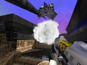
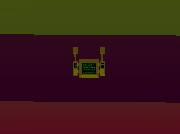
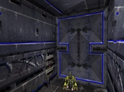
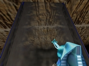
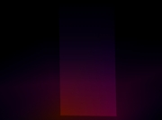

|
| Mysteres
de Perfect Dark : Ruines Skedar |
| La
Multi-Plaque |
| Ceci
est TRES bizarre. Je l'ai découvert par Hasard. Il vous faut les
Rayons X et peut-etre le Sniper Rifle.
Allez vers le fond du Niveau jusqu'au Pilier tout en haut d'un Escalier.
En principe, en Agent et Special Agent, ya un Gilet pas loin en haut de
l'escalier en face, symetriquement. Sortez vos Rayons X et regardez le
Pilier. Il est bien haut en principe. Vers le haut, et si vous zoomez,
vous verrez une Multitude de Plaques enchevetrées, dissimulées
à l'inteieur du Pilier ! J'ai lancé une Roquette
sur le Pilier, il a explosé, et dedans il y avait plein de Petits
Blocs (Quatrième Photo) qui n'explosent pas, quoique l'on fasse. |



| Ordinateur
du Dieu de la Guerre |
Avant
de penetrer dans le Sanctuaire Interieur, vous devez faire une Offrande
au Dieu de la Guerre (Agent Special ou Perfect). Si vous regardez l'Autel
avec un Farsight XR-20 ou les Rayons
X, vous verrez alors un Ordinateur. Lorsque vous faites une Offrande,
en fait vous inter-agissez avec cet Ordinateur. Voici un Zoom sur ce
Mini Ordinateur ! |


| Pilier
Caché |
Arrivé
juste devant la Porte menant à la Salle de l'Armée Skedar,
regardez avec un Farsight XR-20 ou Rayon X sur votre Gauche. On voit
un Pilier Bizarre, la Dernière Photo a été prise
avec le Moonjump ! |


| Rectangle
Bizarre
|
Dès
que vous êtes sur la Passerelle que vous avez activée en
poussant le Bloc, sortez votre Farsight XR-20 et zommez tout en bas
un peu devant du Pont. On voit un rectangle bizarre... Je
sais bien que çà ne se voit pas trop, mais il y a bel
et bien un Gros Rectangle ! Faites le Test vous-memes et vous le verrez
beaucoup mieux. |

